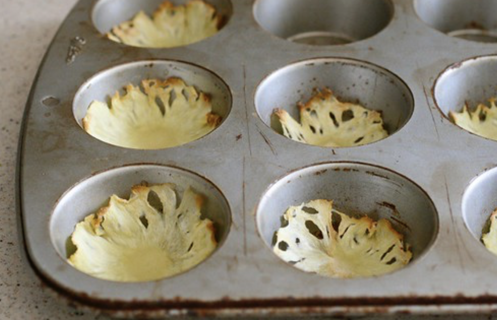

DIY ... 'Do it Yourself'
How to make dried pineapple flowers
One: Cut the pineapple
Cut the top and the rind of the pineapple off. Cut out any seeds that remain in the pineapple.
Two: Slice the pineapple
Cut very thin slices across the pineapple. They should be almost translucent. Lay them out on a baking sheet side by side.
Three: Bake

Bake the pineapple slices in the oven at 225 degrees for around 30 minutes. After the baking process, if you want a curved edge then place them into a cupcake tray and let them cool off like that.